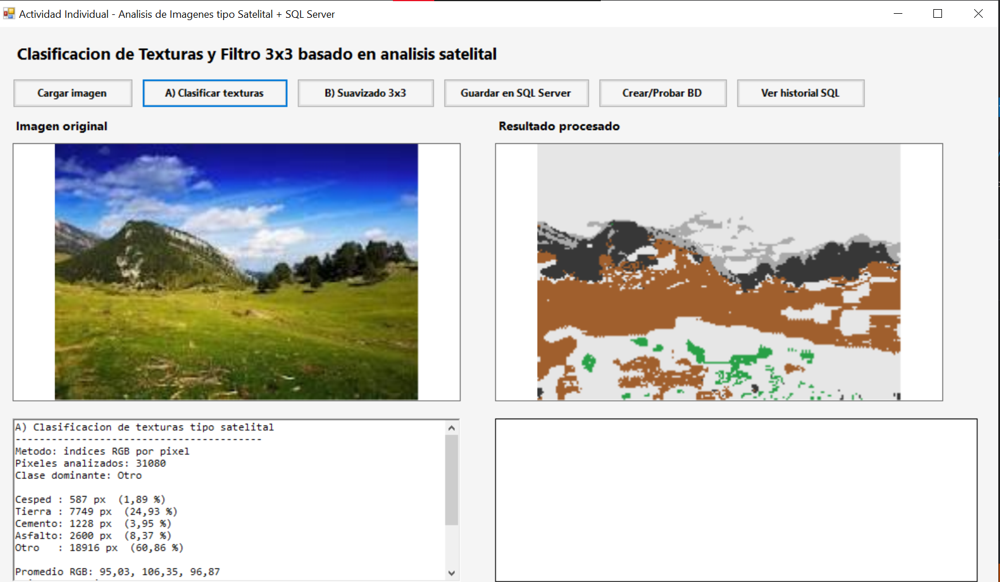
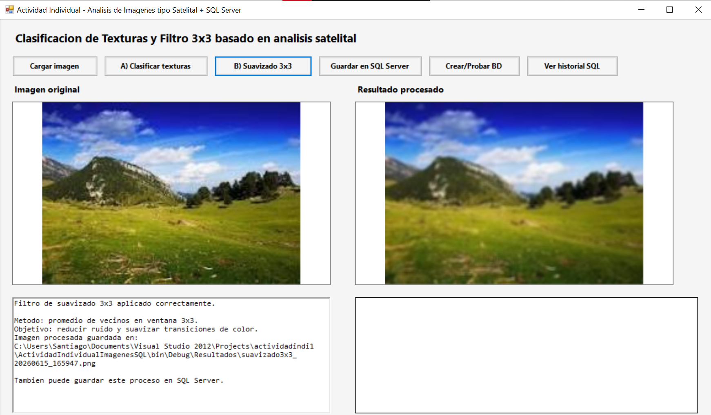
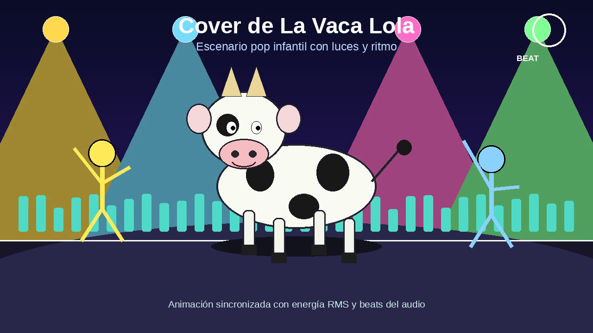
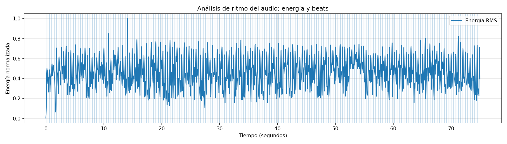

Resultados de las Actividades Individuales
En esta página se presentan únicamente los resultados individuales desarrollados para la práctica de Multimedia.
Clasificación de Texturas tipo Satelital
Esta actividad consiste en analizar una imagen a nivel de píxel para diferenciar superficies como césped, tierra, cemento, asfalto u otras categorías. El sistema trabaja con los valores RGB de cada píxel y aplica reglas de clasificación para generar un mapa visual con colores representativos.
Resultado de clasificación de texturas

| Antes | Después |
|---|---|
| La imagen original conserva sus colores naturales y no indica de forma directa qué tipo de superficie contiene cada zona. | La imagen procesada muestra un mapa clasificado donde cada superficie tiene un color representativo: césped, tierra, cemento, asfalto u otro. |
Filtro de Suavizado 3x3
En esta actividad se implementó un filtro promedio de ventana 3x3. El algoritmo recorre la imagen píxel por píxel y reemplaza cada valor por el promedio de sus vecinos cercanos, reduciendo el ruido visual y suavizando las transiciones de color.
Resultado del filtro de suavizado 3x3

| Antes | Después |
|---|---|
| La imagen presenta ruido visual y variaciones fuertes entre píxeles vecinos. | El filtro promedio 3x3 suaviza la imagen y mejora la continuidad visual entre zonas cercanas. |
Cover de “La Vaca Lola” con Animación Sincronizada
Esta actividad consiste en vincular un audio de cover con una animación. Se utilizó un audio propio y se generó una animación con personajes 2D, donde los movimientos, luces y efectos visuales reaccionan al ritmo de la música.
Video final del cover animado
Fotograma del video animado

Análisis de ritmo del audio

| Antes | Después |
|---|---|
| Solo se contaba con el audio del cover sin una representación visual sincronizada. | El audio fue integrado en una producción multimedia con animación, movimiento, luces y efectos sincronizados al ritmo. |